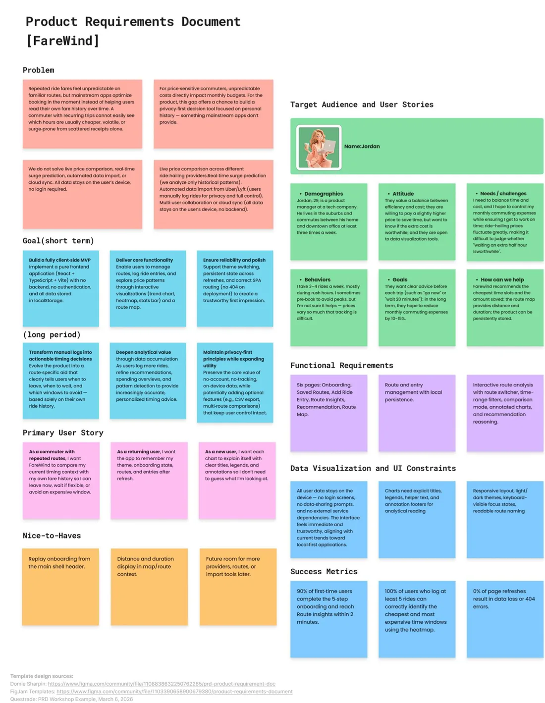
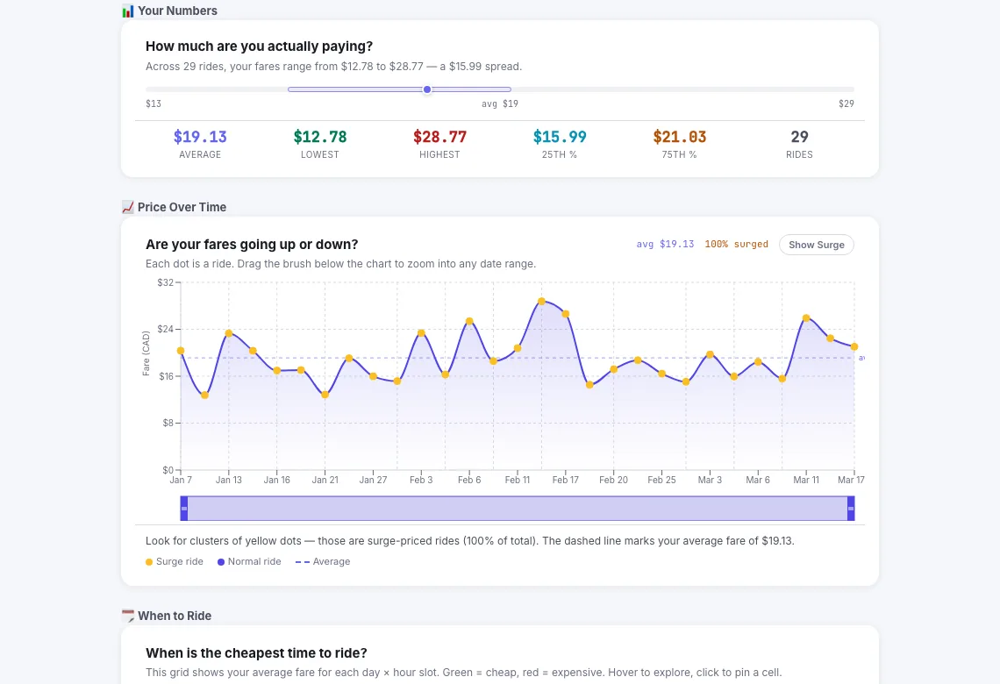
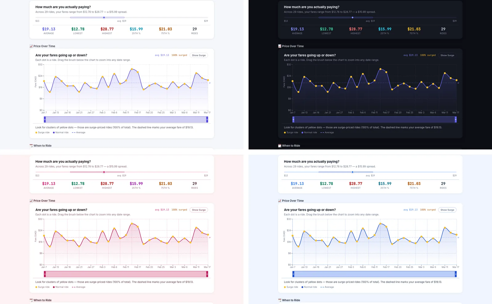
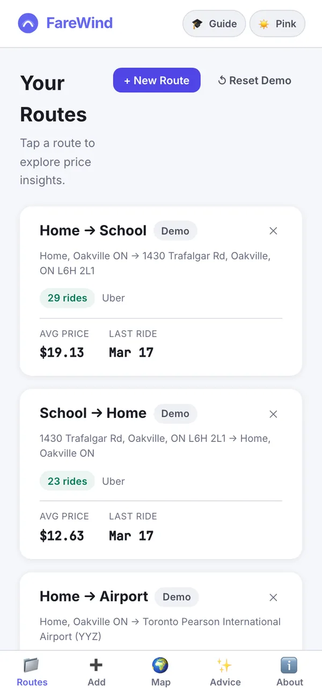
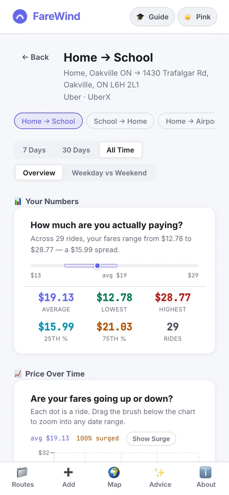

At a glance一览一覽概要En brefAuf einen Blick
- Problem问题問題課題ProblèmeProblem
- Fares on routes people ride every week feel random. Ride-hailing apps optimise the booking in front of you; none of them help you read your own fare history, so a commuter can’t tell which hours are usually cheap, volatile or surge-prone.每周都在坐的路线，车费却像是随机的。网约车应用只优化眼前这一单，没有一个帮你读懂自己的车费历史，所以通勤者分不清哪些时段通常便宜、波动大或者容易加价。每週都在坐的路線，車資卻像是隨機的。叫車應用只最佳化眼前這一單，沒有一個幫你讀懂自己的車資歷史，所以通勤者分不清哪些時段通常便宜、波動大或容易加價。毎週乗るルートなのに、料金はまるでランダムに感じられます。配車アプリは目の前の予約を最適化するだけで、自分の料金履歴を読み解く手助けはしてくれません。だから通勤者には、どの時間帯がたいてい安いのか、変動が大きいのか、割増になりやすいのかが分かりません。Sur des trajets faits chaque semaine, les prix semblent aléatoires. Les applis de VTC optimisent la réservation du moment ; aucune n’aide à lire son propre historique, si bien qu’un navetteur ne sait pas quelles heures sont d’habitude bon marché, volatiles ou sujettes aux majorations.Auf Strecken, die man jede Woche fährt, wirken die Preise zufällig. Fahrdienst-Apps optimieren die Buchung im Moment; keine hilft, die eigene Preisgeschichte zu lesen. So weiß ein Pendler nicht, welche Stunden meist günstig, schwankend oder zuschlagsanfällig sind.
- Role角色角色役割RôleRolle
- Solo: research, product requirements, personas, information design, charts, recommendation rules, front-end and deployment.独立完成：调研、产品需求、用户画像、信息设计、图表、推荐规则、前端与部署。獨立完成：研究、產品需求、人物誌、資訊設計、圖表、推薦規則、前端與部署。個人制作：リサーチ、プロダクト要件、ペルソナ、情報設計、チャート、提案ルール、フロントエンド、デプロイ。Seul : recherche, cahier des charges, personas, design de l’information, graphiques, règles de recommandation, front-end et déploiement.Allein: Recherche, Produktanforderungen, Personas, Informationsdesign, Diagramme, Empfehlungsregeln, Frontend und Deployment.
- Data数据資料データDonnéesDaten
- Only what the user logs — route, time, price and surge — kept in localStorage. OpenStreetMap geocoding and OSRM road geometry add the spatial context.只用用户自己记录的数据——路线、时间、价格和加价倍数——存在 localStorage 里。OpenStreetMap 地理编码和 OSRM 道路几何补上空间信息。只用使用者自己記錄的資料——路線、時間、價格和加價倍數——存在 localStorage 裡。OpenStreetMap 地理編碼和 OSRM 道路幾何補上空間資訊。ユーザーが記録したデータだけ（ルート、時刻、料金、割増倍率）を localStorage に保存。OpenStreetMap のジオコーディングと OSRM の道路形状で空間の文脈を補います。Uniquement ce que l’utilisateur note — trajet, heure, prix et majoration —, conservé dans le localStorage. Le géocodage OpenStreetMap et la géométrie routière d’OSRM ajoutent le contexte spatial.Nur das, was man selbst einträgt – Strecke, Uhrzeit, Preis und Zuschlag –, gespeichert im localStorage. OpenStreetMap-Geokodierung und OSRM-Straßengeometrie liefern den räumlichen Kontext.
- Views视图檢視ビューVuesAnsichten
- A stats bar, a fare-over-time chart, a day × hour heatmap, a route map and a recommendations page.统计条、票价走势图、星期 × 小时热力图、路线地图和建议页。統計條、車資走勢圖、星期 × 小時熱力圖、路線地圖和建議頁。統計バー、料金推移チャート、曜日 × 時間のヒートマップ、ルートマップ、提案ページ。Une barre de statistiques, une courbe des tarifs, une carte de chaleur jour × heure, une carte des trajets et une page de recommandations.Eine Kennzahlenleiste, ein Preisverlauf, eine Heatmap Wochentag × Stunde, eine Streckenkarte und eine Empfehlungsseite.
- Key decisions关键决策關鍵決策主な判断Décisions clésWichtige Entscheidungen
- No backend, login or ride-hailing API; a rule layer that turns charts into actions; every chart explains itself with a title, legend and footnote.不要后端、不要登录、不接网约车 API；用一层规则把图表变成行动建议；每张图都自带标题、图例和脚注，自己把自己讲清楚。不要後端、不要登入、不接叫車 API；用一層規則把圖表變成行動建議；每張圖都自帶標題、圖例和註腳，自己把自己講清楚。バックエンドもログインも配車 API も使わない。チャートを行動に変えるルール層を置く。どのチャートもタイトル、凡例、脚注で自らを説明する。Ni back-end, ni connexion, ni API de VTC ; une couche de règles qui transforme les graphiques en actions ; chaque graphique s’explique par un titre, une légende et une note.Kein Backend, kein Login, keine Fahrdienst-API; eine Regelschicht, die Diagramme in Handlungen übersetzt; jedes Diagramm erklärt sich mit Titel, Legende und Fußnote selbst.
- Outcome成果成果成果RésultatErgebnis
- A deployed six-page prototype with six demo routes, four colour themes that meet WCAG AAA contrast, and recommendations that estimate savings per route.一个已上线的六页原型：六条演示路线、四套均达到 WCAG AAA 对比度的配色主题，以及按路线估算可节省金额的建议。一個已上線的六頁原型：六條示範路線、四套均達到 WCAG AAA 對比度的配色主題，以及依路線估算可節省金額的建議。公開済みの 6 ページのプロトタイプ。デモ用の 6 ルート、すべて WCAG AAA のコントラストを満たす 4 つのカラーテーマ、ルートごとの節約額を見積もる提案。Un prototype de six pages en ligne, avec six trajets de démonstration, quatre thèmes de couleur conformes au contraste WCAG AAA et des recommandations qui estiment l’économie par trajet.Ein veröffentlichter Prototyp mit sechs Seiten, sechs Demo-Strecken, vier Farbthemes mit WCAG-AAA-Kontrast und Empfehlungen, die die Ersparnis pro Strecke schätzen.
Context背景背景背景ContexteKontext
FareWind is the companion to FluxMap. Where FluxMap visualizes a public firehose, FareWind asks a smaller, personal question: given the rides I have already taken, when should I book the next one?
FareWind 是 FluxMap 的姊妹项目。FluxMap 可视化的是公共的信息洪流，FareWind 问的是一个更小、更私人的问题：根据我已经坐过的这些车，下一趟什么时候叫最好？
FareWind 是 FluxMap 的姊妹專案。FluxMap 視覺化的是公共的資訊洪流，FareWind 問的是一個更小、更私人的問題：根據我已經坐過的這些車，下一趟什麼時候叫最好？
FareWind は FluxMap の姉妹プロジェクトです。FluxMap が公共の情報の奔流を可視化するのに対し、FareWind が問うのは、もっと小さく個人的なこと。これまでの乗車をふまえると、次はいつ呼ぶのがいいのか？
FareWind est le pendant de FluxMap. Là où FluxMap visualise un flux public, FareWind pose une question plus petite et plus personnelle : vu les courses que j’ai déjà faites, quand réserver la prochaine ?
FareWind ist das Gegenstück zu FluxMap. Wo FluxMap einen öffentlichen Datenstrom visualisiert, stellt FareWind eine kleinere, persönliche Frage: Wann sollte ich nach den Fahrten, die ich schon gemacht habe, die nächste buchen?
I started from ten cultural scenarios and narrowed them to ride-hailing price swings, then looked hard at the data. Uber’s price-estimate API only returns a fare range for one trip at one moment, and pulling real ride histories would have meant user authorisation and compliance risks. So I flipped the premise: instead of reading prices from a platform, FareWind reads the receipts you already have — and the product moved from “checking prices” to helping people make long-term timing decisions.
我从十个文化场景出发，逐步收窄到网约车的价格波动，然后认真审视了数据来源。Uber 的价格估算 API 只能返回某一时刻、某一趟行程的价格区间；如果要拉取真实的乘车记录，就会牵涉用户授权和合规风险。于是我把前提反过来：FareWind 不从平台读取价格，而是读你手里已有的收据——产品定位也从“查价格”变成了帮人做长期的出行时机决策。
我從十個文化情境出發，逐步收窄到叫車的價格波動，然後認真檢視了資料來源。Uber 的價格估算 API 只能回傳某一時刻、某一趟行程的價格區間；如果要擷取真實的乘車紀錄，就會牽涉使用者授權和法規風險。於是我把前提反過來：FareWind 不從平台讀取價格，而是讀你手上已有的收據——產品定位也從「查價格」變成了幫人做長期的出行時機決策。
10 の文化的なシナリオから出発し、配車サービスの価格変動まで絞り込んでから、データを徹底的に検討しました。Uber の料金見積もり API が返すのは、ある時点のある乗車の料金幅だけ。実際の乗車履歴を取り込もうとすれば、ユーザーの認可やコンプライアンスのリスクが伴います。そこで前提をひっくり返しました。プラットフォームから価格を読むのではなく、手元にあるレシートを読む。こうしてプロダクトは「価格を調べる」ものから、長期的なタイミングの判断を助けるものへと変わりました。
Je suis parti de dix scénarios culturels, réduits aux variations de prix des VTC, puis j’ai examiné les données de près. L’API d’estimation de prix d’Uber ne renvoie qu’une fourchette pour un trajet à un instant donné, et récupérer de vrais historiques de courses aurait impliqué des autorisations et des risques de conformité. J’ai donc renversé la prémisse : au lieu de lire les prix sur une plateforme, FareWind lit les reçus que vous avez déjà — et le produit est passé de « vérifier les prix » à aider à prendre des décisions de timing sur la durée.
Ich bin von zehn kulturellen Szenarien ausgegangen, habe auf Preisschwankungen bei Fahrdiensten eingegrenzt und mir dann die Daten genau angesehen. Ubers Preisschätzungs-API liefert nur eine Preisspanne für eine Fahrt zu einem Zeitpunkt, und echte Fahrthistorien abzurufen hätte Nutzerautorisierung und Compliance-Risiken bedeutet. Also habe ich die Prämisse umgedreht: Statt Preise von einer Plattform zu lesen, liest FareWind die Belege, die man schon hat – und aus „Preise prüfen“ wurde Hilfe bei langfristigen Timing-Entscheidungen.
Why fares are hard to judge为什么车费难以判断為什麼車資難以判斷なぜ料金は判断しにくいのかPourquoi les prix sont difficiles à jugerWarum Fahrpreise schwer einzuschätzen sind
Four ideas shaped the product:
四个理论塑造了这个产品：
四個理論塑造了這個產品：
4 つの考え方がプロダクトを形づくりました。
Quatre idées ont façonné le produit :
Vier Ideen haben das Produkt geprägt:
- Decision theory (Kahneman & Tversky): under uncertainty we lean on heuristics and the number in front of us — so give people a better reference point than today’s quote.
- Information visualization (Tufte, Ware): charts should reveal structure and pattern, not just report numbers.
- Behavioural economics (Thaler & Sunstein): mental accounting makes frequent small costs easy to ignore — so add them up for people.
- Data humanism (Giorgia Lupi): data should serve personal stories and decisions, and people should own their own data.
- 决策理论（Kahneman 与 Tversky）：在不确定中，人会依赖直觉和眼前的数字——所以要给人一个比当下报价更好的参照点。
- 信息可视化理论（Tufte、Ware）：图表应该揭示结构和规律，而不只是罗列数字。
- 行为经济学（Thaler 与 Sunstein）：心理账户让人容易忽视频繁的小额支出——所以要替用户把它们加起来。
- 数据人文主义（Giorgia Lupi）：数据应该服务于个人的叙事和决策，而且人应该拥有自己的数据。
- 決策理論（Kahneman 與 Tversky）：在不確定中，人會依賴直覺和眼前的數字——所以要給人一個比當下報價更好的參照點。
- 資訊視覺化理論（Tufte、Ware）：圖表應該揭示結構和規律，而不只是羅列數字。
- 行為經濟學（Thaler 與 Sunstein）：心理帳戶讓人容易忽視頻繁的小額支出——所以要替使用者把它們加起來。
- 資料人文主義（Giorgia Lupi）：資料應該服務於個人的敘事和決策，而且人應該擁有自己的資料。
- 意思決定理論（Kahneman と Tversky）：不確実な状況では、人はヒューリスティクスと目の前の数字に頼る。だから今の見積もりより良い参照点を渡す。
- 情報可視化の理論（Tufte、Ware）：チャートは数字を並べるだけでなく、構造とパターンを明らかにするべき。
- 行動経済学（Thaler と Sunstein）：心の会計のせいで、頻繁な少額の出費は見過ごされがち。だから代わりに合計してみせる。
- データ・ヒューマニズム（Giorgia Lupi）：データは個人の物語と判断のためにあり、自分のデータは自分で持つべき。
- Théorie de la décision (Kahneman et Tversky) : dans l’incertitude, on s’appuie sur des heuristiques et sur le chiffre affiché — il faut donc offrir un meilleur point de référence que le prix du moment.
- Visualisation de l’information (Tufte, Ware) : un graphique doit révéler une structure et des motifs, pas seulement aligner des chiffres.
- Économie comportementale (Thaler et Sunstein) : la comptabilité mentale fait oublier les petites dépenses fréquentes — il faut donc les additionner pour l’utilisateur.
- Humanisme des données (Giorgia Lupi) : les données doivent servir des récits et des décisions personnels, et chacun doit posséder les siennes.
- Entscheidungstheorie (Kahneman und Tversky): Unter Unsicherheit verlassen wir uns auf Heuristiken und die Zahl vor uns – also braucht es einen besseren Bezugspunkt als das aktuelle Angebot.
- Informationsvisualisierung (Tufte, Ware): Diagramme sollen Struktur und Muster zeigen, nicht nur Zahlen auflisten.
- Verhaltensökonomie (Thaler und Sunstein): Mentale Buchführung lässt häufige kleine Ausgaben untergehen – also rechnet man sie für die Leute zusammen.
- Datenhumanismus (Giorgia Lupi): Daten sollen persönlichen Geschichten und Entscheidungen dienen, und jeder soll seine Daten selbst besitzen.
What already exists已有的产品已有的產品既存のプロダクトCe qui existe déjàWas es schon gibt
| Product产品產品プロダクトProduitProdukt | What it does做什么做什麼できることCe qu’il faitWas es macht | Gap不足不足足りない点LimiteLücke |
|---|---|---|
| Uber | Instant booking, fare estimates, price lock with Uber Reserve即时叫车、价格估算、Uber Reserve 锁价即時叫車、價格估算、Uber Reserve 鎖價即時の配車、料金見積もり、Uber Reserve での価格固定Réservation immédiate, estimation, prix bloqué avec Uber ReserveSofortbuchung, Preisschätzung, Preisgarantie mit Uber Reserve | Keeps no analysis of your trips; you only ever see today’s price.不分析你的历史行程，你永远只能看到当下的价格。不分析你的歷史行程，你永遠只能看到當下的價格。過去の乗車は分析せず、見えるのはいつも今の料金だけ。Aucune analyse de vos trajets ; on ne voit que le prix du jour.Keine Auswertung der eigenen Fahrten; man sieht immer nur den heutigen Preis. |
| Lyft | Booking, estimates, price lock, Lyft Pink subscription叫车、估价、锁价、Lyft Pink 订阅叫車、估價、鎖價、Lyft Pink 訂閱配車、見積もり、価格固定、Lyft Pink のサブスクRéservation, estimation, prix bloqué, abonnement Lyft PinkBuchung, Schätzung, Preisgarantie, Lyft-Pink-Abo | The same gap: no personal history or long-term patterns.同样的缺口：没有个人历史，也没有长期规律。同樣的缺口：沒有個人歷史，也沒有長期規律。同じ欠落。個人の履歴も長期的なパターンもない。Même manque : ni historique personnel ni tendances de long terme.Dieselbe Lücke: keine persönliche Historie, keine langfristigen Muster. |
| Curb | Licensed taxis with stable, surge-free pricing正规出租车，价格稳定、不加价正規計程車，價格穩定、不加價正規タクシーで、料金が安定し割増もないTaxis agréés, prix stables sans majorationLizenzierte Taxis mit stabilen Preisen ohne Zuschlag | No fare history across times and routes.没有跨时段、跨路线的车费历史。沒有跨時段、跨路線的車資歷史。時間帯やルートをまたいだ料金履歴がない。Aucun historique des prix selon les heures et les trajets.Keine Preishistorie über Zeiten und Strecken. |
| Obi | Compares live prices across Uber, Lyft and others同时比较 Uber、Lyft 等平台的实时价格同時比較 Uber、Lyft 等平台的即時價格Uber や Lyft などのリアルタイム料金を比較Compare les prix en direct d’Uber, de Lyft et d’autresVergleicht Live-Preise von Uber, Lyft und anderen | Optimises the moment; keeps no history and builds no timing strategy.只优化当下，不保留历史，也帮不了你形成出行时机的策略。只最佳化當下，不保留歷史，也幫不了你形成出行時機的策略。その瞬間を最適化するだけで、履歴は残らず、タイミングの戦略も作れない。Optimise l’instant ; ne garde aucun historique et ne bâtit aucune stratégie de timing.Optimiert den Moment; speichert keine Historie und entwickelt keine Timing-Strategie. |
Every product optimises the booking in front of you. FareWind takes the other position: a privacy-first personal analytics tool that turns past rides into route-specific charts, time-of-day patterns and concrete actions.
这些产品都在优化眼前的这一单。FareWind 站在另一边：一个隐私优先的个人分析工具，把过去的行程变成每条路线专属的图表、时段规律和具体的行动建议。
這些產品都在最佳化眼前的這一單。FareWind 站在另一邊：一個隱私優先的個人分析工具，把過去的行程變成每條路線專屬的圖表、時段規律和具體的行動建議。
どのプロダクトも目の前の予約を最適化しています。FareWind は反対側に立ちます。プライバシーを最優先にした個人向けの分析ツールで、過去の乗車をルートごとのチャート、時間帯のパターン、具体的な行動に変えます。
Tous ces produits optimisent la réservation du moment. FareWind prend la position inverse : un outil d’analyse personnelle, respectueux de la vie privée, qui transforme les courses passées en graphiques par trajet, en tendances horaires et en actions concrètes.
Alle diese Produkte optimieren die Buchung im Moment. FareWind nimmt die Gegenposition ein: ein datenschutzfreundliches persönliches Analysewerkzeug, das vergangene Fahrten in streckenbezogene Diagramme, Tageszeit-Muster und konkrete Handlungen übersetzt.
Who it’s for为谁而做為誰而做誰のためのツールかPour quiFür wen
- Alex, a student — on a tight budget, wants to know the cheapest time of day to book and to stay out of evening peaks.
- Jordan, a commuter — balances time and cost: arrive on time, keep the monthly commuting bill under control.
- Alex，学生 — 预算有限，想知道一天中什么时候叫车最便宜，避开傍晚的高峰。
- Jordan，通勤族 — 在时间和花费之间找平衡：既要准时，又要控制每月的通勤开销。
- Alex，學生 — 預算有限，想知道一天中什麼時候叫車最便宜，避開傍晚的尖峰。
- Jordan，通勤族 — 在時間和花費之間找平衡：既要準時，又要控制每月的通勤開銷。
- Alex（学生） — 予算が限られていて、いちばん安く呼べる時間帯を知り、夕方のピークを避けたい。
- Jordan（通勤者） — 時間とコストのバランスを取りたい。遅刻せず、月々の通勤費も抑えたい。
- Alex, étudiant — au budget serré, veut savoir à quelle heure réserver pour payer le moins et éviter les pics du soir.
- Jordan, navetteur — arbitre entre temps et coût : arriver à l’heure tout en maîtrisant le budget mensuel de transport.
- Alex, Student – mit knappem Budget, will wissen, wann am Tag die Buchung am günstigsten ist, und die Abendspitzen meiden.
- Jordan, Pendler – wägt Zeit gegen Kosten ab: pünktlich ankommen und die monatlichen Pendelkosten im Griff behalten.
The primary user story: “As a commuter with repeated routes, I want FareWind to compare my current timing with my own fare history, so I can leave now, wait if I’m flexible, or avoid an expensive window.” A second story kept the product honest about persistence: “As a returning user, I want the app to remember my theme, onboarding, routes and entries after a refresh.”
主要用户故事是：“作为一个经常往返固定路线的通勤者，我希望 FareWind 能把我现在的出发时间和我自己的车费历史做比较，让我决定是现在出发、在时间允许时再等等，还是避开一个贵的时段。”第二个用户故事确保了数据的持久性：“作为回访用户，我希望刷新之后，应用还记得我的主题、引导进度、路线和行程记录。”
主要使用者故事是：「作為一個經常往返固定路線的通勤者，我希望 FareWind 能把我現在的出發時間和我自己的車資歷史做比較，讓我決定是現在出發、在時間允許時再等等，還是避開一個貴的時段。」第二個使用者故事確保了資料的持久性：「作為回訪使用者，我希望重新整理之後，應用還記得我的主題、引導進度、路線和行程紀錄。」
主なユーザーストーリーは、「決まったルートを繰り返す通勤者として、今のタイミングを自分の料金履歴と比べてほしい。そうすれば今出るか、余裕があれば待つか、高い時間帯を避けるかを決められる」。2 つ目のストーリーで、データの保持にも責任を持たせました。「再訪したユーザーとして、更新してもテーマ、オンボーディングの状態、ルート、記録を覚えていてほしい」。
Le récit utilisateur principal : « En tant que navetteur sur des trajets répétés, je veux que FareWind compare mon horaire actuel à mon propre historique de prix, pour partir maintenant, attendre si je peux, ou éviter un créneau cher. » Un second récit a rendu le produit exigeant sur la persistance : « En tant qu’utilisateur qui revient, je veux que l’application se souvienne de mon thème, de l’accueil, de mes trajets et de mes courses après un rechargement. »
Die zentrale User Story: „Als Pendler mit wiederkehrenden Strecken will ich, dass FareWind meinen aktuellen Zeitpunkt mit meiner eigenen Preisgeschichte vergleicht, damit ich jetzt losfahre, warte, wenn ich flexibel bin, oder ein teures Zeitfenster meide.“ Eine zweite Story sorgte dafür, dass die Daten bleiben: „Als wiederkehrender Nutzer will ich, dass die App nach dem Neuladen mein Theme, das Onboarding, meine Strecken und Einträge noch kennt.“
I wrote the requirements as a PRD board: problem, short- and long-term goals, personas, functional requirements, data-visualization and UI constraints, nice-to-haves and success metrics.
我把需求写成了一面 PRD 便利贴墙：问题、短期与长期目标、用户画像、功能需求、数据可视化与界面约束、锦上添花的功能，以及成功指标。
我把需求寫成了一面 PRD 便利貼牆：問題、短期與長期目標、人物誌、功能需求、資料視覺化與介面限制、錦上添花的功能，以及成功指標。
要件は PRD のボードにまとめました。課題、短期と長期の目標、ペルソナ、機能要件、データビジュアライゼーションと UI の制約、あったら嬉しい機能、成功指標。
J’ai rédigé le cahier des charges sous forme de tableau : problème, objectifs à court et long terme, personas, exigences fonctionnelles, contraintes de visualisation et d’interface, options et indicateurs de réussite.
Die Anforderungen habe ich als PRD-Board geschrieben: Problem, kurz- und langfristige Ziele, Personas, funktionale Anforderungen, Vorgaben für Visualisierung und UI, Nice-to-haves und Erfolgskennzahlen.

Three decisions that shaped it决定产品形态的三个选择決定產品形態的三個選擇プロダクトを形づくった 3 つの判断Trois décisions structurantesDrei prägende Entscheidungen
- Front end and localStorage, no backend. Ride data is sensitive and a login would raise the trust barrier. Keeping data on the device also makes the product work offline and run as a plain static site.
- A recommendation layer on top of the charts. Charts show patterns, but testers still asked “so what should I do?” The rules translate patterns into “leave now”, “wait” or “avoid”, with an estimated saving, and close the loop between analysis and decision.
- Self-explanatory charts, refresh-safe routing, real route management. Every chart carries a title, legend and footnote; the deployed app must never 404 on refresh; and people must be able to add and delete their own routes. Together these make FareWind trustworthy, usable and personal.
- 纯前端加 localStorage，不要后端。乘车数据很敏感，要求登录会抬高信任门槛。数据留在设备上，产品还能离线使用，整个应用就是一个静态网站。
- 在图表之上加一层建议。图表能显示规律，但测试者还是会问“那我该怎么做？”规则把规律翻译成“现在出发”“再等等”或“避开”，并附上估算的可节省金额，让分析和决策形成闭环。
- 能自我说明的图表、刷新不出错的路由、真正的路线管理。每张图都有标题、图例和脚注；上线的应用刷新时绝不能出现 404；用户必须能自己添加和删除路线。这三点让 FareWind 变得可信、好用，也真正属于用户自己。
- 純前端加 localStorage，不要後端。乘車資料很敏感，要求登入會抬高信任門檻。資料留在裝置上，產品還能離線使用，整個應用就是一個靜態網站。
- 在圖表之上加一層建議。圖表能顯示規律，但測試者還是會問「那我該怎麼做？」規則把規律翻譯成「現在出發」「再等等」或「避開」，並附上估算的可節省金額，讓分析和決策形成閉環。
- 能自我說明的圖表、重新整理不出錯的路由、真正的路線管理。每張圖都有標題、圖例和註腳；上線的應用重新整理時絕不能出現 404；使用者必須能自己新增和刪除路線。這三點讓 FareWind 變得可信、好用，也真正屬於使用者自己。
- フロントエンドと localStorage だけで、バックエンドなし。乗車データは機微な情報で、ログインを求めれば信頼のハードルが上がります。データを端末に置けばオフラインでも動き、全体を静的サイトとして公開できます。
- チャートの上に提案の層を置く。チャートはパターンを示しますが、テストした人はそれでも「で、どうすればいい？」と聞きました。ルールがパターンを「今出る」「待つ」「避ける」に翻訳し、節約額の見積もりを添えて、分析と判断をつなぎます。
- 自らを説明するチャート、更新しても壊れないルーティング、本物のルート管理。どのチャートにもタイトル、凡例、脚注を付ける。公開したアプリは更新しても 404 にならない。ルートは自分で追加・削除できる。この 3 つで、FareWind は信頼でき、使いやすく、自分のものになります。
- Front-end et localStorage, sans back-end. Les données de trajet sont sensibles et une connexion relèverait la barrière de confiance. Garder les données sur l’appareil permet aussi de fonctionner hors ligne et de publier un simple site statique.
- Une couche de recommandations au-dessus des graphiques. Les graphiques montrent des tendances, mais les testeurs demandaient encore « et donc, je fais quoi ? ». Les règles traduisent les tendances en « partir maintenant », « attendre » ou « éviter », avec une économie estimée, et relient l’analyse à la décision.
- Des graphiques qui s’expliquent, un routage qui tient au rechargement, une vraie gestion des trajets. Chaque graphique a un titre, une légende et une note ; l’application ne doit jamais renvoyer de 404 au rechargement ; et chacun doit pouvoir ajouter et supprimer ses trajets. Ensemble, cela rend FareWind fiable, utilisable et personnel.
- Frontend plus localStorage, kein Backend. Fahrdaten sind sensibel, und ein Login würde die Vertrauensschwelle erhöhen. Daten auf dem Gerät zu halten, macht die App außerdem offline nutzbar und zu einer einfachen statischen Website.
- Eine Empfehlungsschicht über den Diagrammen. Diagramme zeigen Muster, doch Testpersonen fragten trotzdem: „Und was soll ich jetzt tun?“ Die Regeln übersetzen Muster in „jetzt losfahren“, „warten“ oder „meiden“, samt geschätzter Ersparnis, und schließen den Kreis von der Analyse zur Entscheidung.
- Selbsterklärende Diagramme, reload-festes Routing, echte Streckenverwaltung. Jedes Diagramm hat Titel, Legende und Fußnote; die veröffentlichte App darf beim Neuladen nie einen 404 zeigen; und man muss eigene Strecken anlegen und löschen können. Zusammen machen sie FareWind vertrauenswürdig, nutzbar und persönlich.
Choosing the charts图表的选择圖表的選擇チャートの選び方Choisir les graphiquesDie Wahl der Diagramme
Each of the four chart types answers one question about one kind of data.
四种图表，各自针对一种数据，回答一个问题。
四種圖表，各自針對一種資料，回答一個問題。
4 種類のチャートは、それぞれ 1 種類のデータについて 1 つの問いに答えます。
Chacun des quatre types de graphique répond à une question sur un type de données.
Jeder der vier Diagrammtypen beantwortet eine Frage zu einer Art von Daten.
| Chart图表圖表チャートGraphiqueDiagramm | Data数据資料データDonnéesDaten | Question it answers回答的问题回答的問題答える問いQuestionBeantwortete Frage |
|---|---|---|
| Stats bar统计条統計條統計バーBarre de statsKennzahlenleiste | Min, max, mean, quartiles最小值、最大值、平均值、四分位数最小值、最大值、平均值、四分位數最小値、最大値、平均値、四分位数Min, max, moyenne, quartilesMin, Max, Mittelwert, Quartile | Is this fare normal? How wide is the spread?这次的车费正常吗？波动有多大？這次的車資正常嗎？波動有多大？この料金は普通？ 幅はどれくらい？Ce prix est-il normal ? Quel est l’écart ?Ist der Preis normal? Wie groß ist die Spanne? |
| Fare over time票价走势車資走勢料金の推移Prix dans le tempsPreisverlauf | Time series: date → price时间序列：日期 → 价格時間序列：日期 → 價格時系列：日付 → 料金Série temporelle : date → prixZeitreihe: Datum → Preis | Stable, trending or spiking?平稳、走高走低，还是突然飙升？平穩、走高走低，還是突然飆升？安定？ 上昇・下降？ 急騰？Stable, en hausse, en baisse ou en pic ?Stabil, steigend, fallend oder mit Spitzen? |
| Heatmap热力图熱力圖ヒートマップCarte de chaleurHeatmap | Day of week × hour星期 × 小时星期 × 小時曜日 × 時間Jour × heureWochentag × Stunde | Which windows are cheap or expensive, week after week?哪些时段一周又一周地便宜或贵？哪些時段一週又一週地便宜或貴？どの時間帯が毎週安く、どこが高い？Quels créneaux sont bon marché ou chers, semaine après semaine ?Welche Zeitfenster sind Woche für Woche günstig oder teuer? |
| Route map路线地图路線地圖ルートマップCarte des trajetsStreckenkarte | Route geometry, start and end points路线几何、起点和终点路線幾何、起點和終點ルートの形状、出発地と目的地Géométrie du trajet, départ et arrivéeStreckengeometrie, Start und Ziel | Which real journey is this data about?这些数据说的是哪一段真实的路程？這些資料說的是哪一段真實的路程？このデータはどの実際の道のりの話？De quel trajet réel parlent ces données ?Um welche echte Fahrt geht es bei diesen Daten? |

The heatmap turns “when is it cheapest?” into a grid: green is cheap, red is expensive, hovering shows the exact average for a cell and clicking pins it. Its footnote names the answer directly — for this route, Wednesday at 7:00 averages $17.86, while Tuesday at 8:00 peaks at $20.00 — and grey cells are labelled as “no data yet” so empty space isn’t mistaken for cheap.
热力图把“什么时候最便宜”变成一张网格：绿色便宜，红色贵；悬停显示该格的平均价格，点击可以固定。图下的脚注直接给出答案——这条路线周三 7:00 平均 17.86 加元，周二 8:00 最高达到 20.00 加元——灰色格子被注明为“还没有数据”，免得空白被误读成便宜。
熱力圖把「什麼時候最便宜」變成一張網格：綠色便宜，紅色貴；滑過顯示該格的平均價格，點擊可以固定。圖下的註腳直接給出答案——這條路線週三 7:00 平均 17.86 加元，週二 8:00 最高達到 20.00 加元——灰色格子被註明為「還沒有資料」，免得空白被誤讀成便宜。
ヒートマップは「いつがいちばん安い？」をグリッドに変えます。緑は安く、赤は高い。ホバーでそのセルの平均が分かり、クリックで固定できます。脚注が答えをそのまま示し（このルートでは水曜 7:00 が平均 17.86 ドル、火曜 8:00 が最高の 20.00 ドル）、灰色のセルには「まだデータなし」と添えて、空白が安いと誤解されないようにしました。
La carte de chaleur transforme « quand est-ce le moins cher ? » en grille : vert pour bon marché, rouge pour cher ; le survol affiche la moyenne d’une case, le clic l’épingle. Sa note donne la réponse — sur ce trajet, le mercredi à 7 h revient en moyenne à 17,86 $, le mardi à 8 h culmine à 20,00 $ — et les cases grises sont signalées « pas encore de données » pour qu’un vide ne passe pas pour bon marché.
Die Heatmap macht aus „Wann ist es am günstigsten?“ ein Raster: Grün ist günstig, Rot teuer; Hovern zeigt den Durchschnitt einer Zelle, Klicken heftet sie an. Die Fußnote nennt die Antwort direkt – auf dieser Strecke kostet Mittwoch 7:00 im Schnitt 17,86 $, Dienstag 8:00 ist mit 20,00 $ am teuersten – und graue Zellen sind als „noch keine Daten“ markiert, damit Leere nicht für günstig gehalten wird.


From patterns to decisions从规律到决策從規律到決策パターンから判断へDes tendances aux décisionsVon Mustern zu Entscheidungen
The Smart Advice page runs three transparent rules over the same data for every route with at least three rides:
“智能建议”页对每条至少有三趟记录的路线，在同一份数据上运行三条透明的规则：
「智慧建議」頁對每條至少有三趟紀錄的路線，在同一份資料上執行三條透明的規則：
Smart Advice ページは、記録が 3 件以上あるすべてのルートについて、同じデータに 3 つの透明なルールを適用します。
La page Smart Advice applique trois règles transparentes aux mêmes données, pour chaque trajet comptant au moins trois courses :
Die Seite Smart Advice wendet für jede Strecke mit mindestens drei Fahrten drei transparente Regeln auf dieselben Daten an:
- Best time. Average fares by hour, compare the cheapest hour with the most expensive, and suggest booking around the cheapest — with the difference as the estimated saving.
- Surge alert. Find rides with a surge of 1.5× or more and name the hour they cluster around, e.g. “Avoid 8:00 — 22 of your 29 rides had surge ≥ 1.5×.”
- Weekday vs weekend. When both have enough rides and differ by more than a dollar, say which is cheaper and by how much.
- 最佳时段。按小时计算平均车费，比较最便宜和最贵的小时，建议在最便宜的时段附近叫车，并把两者的差额作为估算的可节省金额。
- 加价提醒。找出加价倍数 ≥ 1.5 的行程，指出它们集中在哪个小时，例如“避开 8:00——你 29 趟中有 22 趟加价 ≥ 1.5×”。
- 工作日与周末。当两者的行程都足够多、平均差价超过 1 加元时，说明哪个更便宜、便宜多少。
- 最佳時段。依小時計算平均車資，比較最便宜和最貴的小時，建議在最便宜的時段附近叫車，並把兩者的差額作為估算的可節省金額。
- 加價提醒。找出加價倍數 ≥ 1.5 的行程，指出它們集中在哪個小時，例如「避開 8:00——你 29 趟中有 22 趟加價 ≥ 1.5×」。
- 平日與週末。當兩者的行程都夠多、平均差價超過 1 加元時，說明哪個比較便宜、便宜多少。
- ベストな時間。時間ごとの平均料金を出し、最安と最高の時間を比べ、最安の時間あたりでの予約を提案。その差を節約額の見積もりにします。
- 割増アラート。割増が 1.5 倍以上の乗車を探し、それが集中する時間を示します。例：「8:00 は避けましょう。29 回中 22 回が 1.5 倍以上の割増でした」。
- 平日と週末。どちらにも十分な乗車があり、差が 1 ドルを超えるときに、どちらがいくら安いかを示します。
- Meilleure heure. Moyenne des prix par heure, comparaison de l’heure la moins chère et de la plus chère, puis suggestion de réserver vers la moins chère — l’écart servant d’économie estimée.
- Alerte majoration. Repérer les courses majorées d’au moins 1,5× et nommer l’heure où elles se concentrent, par exemple « Évitez 8 h — 22 de vos 29 courses étaient majorées d’au moins 1,5× ».
- Semaine ou week-end. Quand les deux comptent assez de courses et diffèrent de plus d’un dollar, dire lequel est moins cher et de combien.
- Beste Zeit. Durchschnittspreise pro Stunde, Vergleich der günstigsten mit der teuersten Stunde und der Rat, um die günstigste herum zu buchen – die Differenz ist die geschätzte Ersparnis.
- Zuschlagswarnung. Fahrten mit mindestens 1,5-fachem Zuschlag finden und die Stunde nennen, um die sie sich häufen, etwa „Meide 8:00 – 22 deiner 29 Fahrten hatten ≥ 1,5× Zuschlag“.
- Werktag oder Wochenende. Wenn beide genug Fahrten haben und sich um mehr als einen Dollar unterscheiden, sagen, was günstiger ist und um wie viel.
A Spending Overview adds the money up: everything spent, compared with a baseline of booking every ride at its route’s cheapest hour. On the demo data that is $4,432.33 across 104 rides, $979.20 above baseline. Every card shows its reasoning (“Based on 29 logged rides…”), so the advice can be checked rather than taken on trust.
“花费概览”把钱算清楚：把总花费和一个基准作比较——假设每一趟都在该路线最便宜的时段叫车。在演示数据上，104 趟共花了 4,432.33 加元，比基准多出 979.20 加元。每张卡片都写明了推理依据（“基于 29 趟记录……”），所以建议是可以核对的，而不是只能凭信任接受。
「花費概覽」把錢算清楚：把總花費和一個基準做比較——假設每一趟都在該路線最便宜的時段叫車。在示範資料上，104 趟共花了 4,432.33 加元，比基準多出 979.20 加元。每張卡片都寫明了推理依據（「根據 29 趟紀錄……」），所以建議是可以核對的，而不是只能憑信任接受。
Spending Overview はお金を合計します。使った総額を、すべての乗車をそのルートの最安の時間に予約した場合の基準額と比べるのです。デモデータでは 104 回で 4,432.33 ドル、基準より 979.20 ドル多い結果でした。どのカードにも根拠（「記録した 29 回の乗車に基づく…」）を示しているので、提案は信じるしかないものではなく、確かめられるものになります。
Un aperçu des dépenses fait l’addition : tout ce qui a été dépensé, comparé à une référence où chaque course serait réservée à l’heure la moins chère de son trajet. Sur les données de démo, cela donne 4 432,33 $ pour 104 courses, soit 979,20 $ au-dessus de la référence. Chaque carte affiche son raisonnement (« D’après 29 courses enregistrées… »), pour qu’on puisse vérifier le conseil plutôt que le croire sur parole.
Eine Ausgabenübersicht rechnet das Geld zusammen: alles Ausgegebene, verglichen mit einer Basis, bei der jede Fahrt zur günstigsten Stunde ihrer Strecke gebucht worden wäre. Mit den Demodaten sind das 4.432,33 $ für 104 Fahrten, 979,20 $ über der Basis. Jede Karte zeigt ihre Begründung („Basierend auf 29 erfassten Fahrten …“), damit man den Rat prüfen kann, statt ihm blind zu vertrauen.

How the data moves数据怎样流动資料怎樣流動データの流れComment circulent les donnéesWie die Daten fließen
A logged ride goes into a shared React context and is persisted to localStorage. Route Insights filters it by route and time range and re-renders the Recharts views; the advice page runs its rules on the same data. Adding a route geocodes both addresses with OpenStreetMap’s Nominatim and previews the road route live, and the map fetches OSRM geometry on demand and caches it to avoid repeat calls.
一趟记录下来的行程会进入共享的 React context，并持久化到 localStorage。路线分析页按路线和时间范围过滤数据，重新渲染 Recharts 图表；建议页在同一份数据上运行规则。新增路线时，会用 OpenStreetMap 的 Nominatim 对起点和终点做地理编码，并实时预览道路路线；地图按需获取 OSRM 的道路几何，并缓存结果，避免重复请求。
一趟記錄下來的行程會進入共享的 React context，並持久化到 localStorage。路線分析頁依路線和時間範圍篩選資料，重新繪製 Recharts 圖表；建議頁在同一份資料上執行規則。新增路線時，會用 OpenStreetMap 的 Nominatim 對起點和終點做地理編碼，並即時預覽道路路線；地圖按需取得 OSRM 的道路幾何，並快取結果，避免重複請求。
記録した乗車は共有の React コンテキストに入り、localStorage に保存されます。Route Insights はそれをルートと期間で絞り込み、Recharts のビューを再描画し、提案ページは同じデータにルールを適用します。ルートを追加すると、OpenStreetMap の Nominatim で両方の住所をジオコーディングし、道路のルートをその場でプレビュー。地図は OSRM の形状を必要なときに取得し、キャッシュして同じ呼び出しを繰り返しません。
Une course enregistrée entre dans un contexte React partagé et est persistée dans le localStorage. Route Insights la filtre par trajet et par période et redessine les vues Recharts ; la page de conseils applique ses règles aux mêmes données. Ajouter un trajet géocode les deux adresses avec Nominatim d’OpenStreetMap et prévisualise l’itinéraire en direct, et la carte récupère la géométrie OSRM à la demande et la met en cache pour éviter les appels répétés.
Eine erfasste Fahrt landet in einem gemeinsamen React-Context und wird im localStorage gespeichert. Route Insights filtert sie nach Strecke und Zeitraum und rendert die Recharts-Ansichten neu; die Empfehlungsseite wendet ihre Regeln auf dieselben Daten an. Beim Anlegen einer Strecke werden beide Adressen mit Nominatim von OpenStreetMap geokodiert und die Route live in der Vorschau gezeigt; die Karte lädt OSRM-Geometrie bei Bedarf und speichert sie zwischen, um doppelte Aufrufe zu vermeiden.


So the prototype is explorable on the first visit, I modelled six demo routes around Oakville and downtown Toronto with a seeded generator: a GTA fare formula (base, per-kilometre, per-minute and booking fee, ±20% variance), surge windows for morning, evening and late-night travel, a realistic weekly schedule with skipped days — reproducible on every reload, and resettable from the routes page.
为了让原型第一次打开就能探索，我用一个带种子的生成器，围绕 Oakville 和多伦多市中心模拟了六条演示路线：一套大多伦多地区的车费公式（起步价、每公里、每分钟加预约费，上下浮动 20%），早高峰、晚高峰和深夜的加价窗口，以及带有空档日的真实一周行程——每次刷新都能复现，也可以在路线页一键重置。
為了讓原型第一次打開就能探索，我用一個帶種子的產生器，圍繞 Oakville 和多倫多市中心模擬了六條示範路線：一套大多倫多地區的車資公式（起跳價、每公里、每分鐘加預約費，上下浮動 20%），早尖峰、晚尖峰和深夜的加價時段，以及帶有空檔日的真實一週行程——每次重新整理都能重現，也可以在路線頁一鍵重設。
初回からプロトタイプを試せるよう、シード付きのジェネレーターで、Oakville とトロント中心部を結ぶデモ用の 6 ルートを作りました。GTA の料金式（基本料金、1 km ごと、1 分ごと、予約手数料、±20% の変動）、朝・夕方・深夜の割増時間帯、休みの日を含む現実的な週のスケジュール。再読み込みしても同じ結果になり、ルートページからリセットもできます。
Pour que le prototype soit explorable dès la première visite, j’ai modélisé six trajets de démonstration autour d’Oakville et du centre de Toronto avec un générateur à graine : une formule de prix pour le Grand Toronto (prise en charge, kilomètre, minute et frais de réservation, ±20 %), des créneaux de majoration le matin, le soir et la nuit, un emploi du temps hebdomadaire réaliste avec des jours sautés — reproductible à chaque rechargement et réinitialisable depuis la page des trajets.
Damit der Prototyp schon beim ersten Besuch erkundbar ist, habe ich mit einem Seed-Generator sechs Demo-Strecken rund um Oakville und Downtown Toronto modelliert: eine Preisformel für den Großraum Toronto (Grundpreis, pro Kilometer, pro Minute und Buchungsgebühr, ±20 %), Zuschlagsfenster für Morgen, Abend und späte Nacht und einen realistischen Wochenplan mit ausgelassenen Tagen – bei jedem Neuladen reproduzierbar und auf der Streckenseite zurücksetzbar.
Calm, readable, decision-first冷静、易读、以决策为先冷靜、易讀、以決策為先落ち着き、読みやすく、判断を優先Calme, lisible, tourné vers la décisionRuhig, lesbar, entscheidungsorientiert
Money and waiting are stressful, so the interface stays quiet: neutral backgrounds, one idea per card (“Your Numbers”, “Price Over Time”, “When to Ride”) and colour reserved for meaning — green for cheaper, red for more expensive, yellow for surge. Four themes, Light, Dark, Pink and Blue, all meet WCAG AAA contrast and are remembered between visits, along with visible focus outlines for keyboard users.
钱和等待都会让人焦虑，所以界面保持安静：中性的背景，每张卡片只讲一件事（“你的数字”“价格走势”“何时出发”），颜色只用来表达含义——绿色更便宜，红色更贵，黄色是加价。Light、Dark、Pink、Blue 四套主题都达到 WCAG AAA 对比度，下次访问时会被记住；键盘用户也能看到清晰的焦点轮廓。
錢和等待都會讓人焦慮，所以介面保持安靜：中性的背景，每張卡片只講一件事（「你的數字」「價格走勢」「何時出發」），顏色只用來表達含義——綠色比較便宜，紅色比較貴，黃色是加價。Light、Dark、Pink、Blue 四套主題都達到 WCAG AAA 對比度，下次造訪時會被記住；鍵盤使用者也能看到清楚的焦點輪廓。
お金と待ち時間はストレスになるので、インターフェースは静かに保ちました。ニュートラルな背景、1 枚のカードに 1 つの考え（「Your Numbers」「Price Over Time」「When to Ride」）、色は意味のためだけに使う——緑は安い、赤は高い、黄色は割増。Light、Dark、Pink、Blue の 4 テーマはすべて WCAG AAA のコントラストを満たし、次の訪問でも記憶されます。キーボード利用者のためにフォーカスの輪郭もはっきり見せています。
L’argent et l’attente sont stressants, alors l’interface reste calme : fonds neutres, une idée par carte (« Your Numbers », « Price Over Time », « When to Ride ») et la couleur réservée au sens — vert pour moins cher, rouge pour plus cher, jaune pour la majoration. Quatre thèmes, Light, Dark, Pink et Blue, respectent tous le contraste WCAG AAA et sont mémorisés d’une visite à l’autre, avec des contours de focus visibles pour le clavier.
Geld und Warten stressen, also bleibt die Oberfläche ruhig: neutrale Hintergründe, eine Idee pro Karte („Your Numbers“, „Price Over Time“, „When to Ride“) und Farbe nur für Bedeutung – Grün für günstiger, Rot für teurer, Gelb für Zuschlag. Vier Themes, Light, Dark, Pink und Blue, erfüllen alle den WCAG-AAA-Kontrast und werden zwischen Besuchen gespeichert, dazu sichtbare Fokusrahmen für die Tastaturbedienung.


First-time visitors get a five-step Scrollama onboarding that explains the idea, then land on six pre-loaded demo routes so they can explore before logging anything; a hint that the app “works best with 10+ rides logged” sets expectations honestly. Every page is mobile-first, with a bottom tab bar on phones.
第一次访问的用户会看到一个五步的 Scrollama 滚动引导，讲清楚产品的想法，然后直接进入六条预载的演示路线，不用先录入数据就能开始探索；“记录 10 趟以上效果最好”的提示诚实地设定了预期。每个页面都按移动优先设计，手机上使用底部标签栏。
第一次造訪的使用者會看到一個五步的 Scrollama 捲動引導，講清楚產品的想法，然後直接進入六條預載的示範路線，不用先輸入資料就能開始探索；「記錄 10 趟以上效果最好」的提示誠實地設定了預期。每個頁面都按行動優先設計，手機上使用底部分頁列。
初めての訪問者には、アイデアを説明する 5 ステップの Scrollama オンボーディングを用意し、そのあと 6 つのデモルートに着地させるので、何も記録しなくても試せます。「10 回以上記録するといちばん効果的」というヒントで、期待値を正直に伝えています。全ページをモバイルファーストで作り、スマホでは下部のタブバーを使います。
Les nouveaux visiteurs ont droit à un accueil en cinq étapes avec Scrollama qui explique l’idée, puis arrivent sur six trajets de démonstration préchargés pour explorer sans rien saisir ; une indication selon laquelle l’application « fonctionne mieux avec plus de 10 courses » fixe honnêtement les attentes. Chaque page est pensée d’abord pour le mobile, avec une barre d’onglets en bas sur téléphone.
Wer zum ersten Mal kommt, bekommt ein fünfstufiges Scrollama-Onboarding, das die Idee erklärt, und landet dann bei sechs vorgeladenen Demo-Strecken, um sie zu erkunden, bevor man etwas einträgt; der Hinweis „funktioniert am besten mit 10+ erfassten Fahrten“ setzt ehrliche Erwartungen. Jede Seite ist Mobile-first, mit einer Tab-Leiste unten auf dem Handy.


Five versions in three steps三个阶段，五个版本三個階段，五個版本3 段階・5 つのバージョンCinq versions en trois étapesFünf Versionen in drei Schritten
The MVP proved that patterns could come from user-entered rides alone: a typed data model, seeded history, shared state, and the five-page flow — onboarding, saved routes, add ride, insights and recommendations — with a trend chart, a day × hour heatmap, a percentile card and rule-based advice. Review showed the charts were hard to read, nobody understood the heatmap colours, and there was no summary or spatial context.
MVP 证明了：只靠用户自己录入的行程，也能得出规律。它包括有类型定义的数据模型、带种子的历史数据、共享状态，以及五个页面组成的流程——引导、已保存路线、添加行程、分析和建议——还有走势图、星期 × 小时热力图、百分位卡片和基于规则的建议。评审发现：图表难读，没人看得懂热力图的颜色，也缺少汇总和空间信息。
MVP 證明了：只靠使用者自己輸入的行程，也能得出規律。它包括有型別定義的資料模型、帶種子的歷史資料、共享狀態，以及五個頁面組成的流程——引導、已儲存路線、新增行程、分析和建議——還有走勢圖、星期 × 小時熱力圖、百分位卡片和基於規則的建議。評審發現：圖表難讀，沒人看得懂熱力圖的顏色，也缺少彙整和空間資訊。
MVP は、ユーザーが入力した乗車だけからパターンを導けることを示しました。型付きのデータモデル、シード付きの履歴、共有の状態、そしてオンボーディング、保存済みルート、乗車の追加、分析、提案の 5 ページの流れ。料金推移チャート、曜日 × 時間のヒートマップ、パーセンタイルのカード、ルールベースの提案も揃えました。レビューでは、チャートが読みにくい、ヒートマップの色の意味が誰にも分からない、要約も空間の文脈もない、と指摘されました。
Le MVP a prouvé que des tendances pouvaient naître des seules courses saisies : un modèle de données typé, un historique généré, un état partagé et le parcours en cinq pages — accueil, trajets enregistrés, ajout de course, analyse et recommandations —, avec une courbe de tendance, une carte de chaleur jour × heure, une carte de percentiles et des conseils à base de règles. La revue a montré que les graphiques étaient difficiles à lire, que personne ne comprenait les couleurs de la carte de chaleur, et qu’il manquait un résumé et un contexte spatial.
Das MVP bewies, dass sich Muster allein aus selbst eingetragenen Fahrten ergeben: ein typisiertes Datenmodell, generierte Historie, gemeinsamer Zustand und der Ablauf über fünf Seiten – Onboarding, gespeicherte Strecken, Fahrt hinzufügen, Auswertung und Empfehlungen –, mit Trenddiagramm, Heatmap Wochentag × Stunde, Perzentil-Karte und regelbasierten Tipps. Das Review zeigte: Die Diagramme waren schwer zu lesen, niemand verstand die Heatmap-Farben, und es fehlten Zusammenfassung und räumlicher Kontext.
Routes got human names (“Home → School”), the stats bar gained its range visualization, a full Route Map page arrived, and focus visibility and accessibility were cleaned up. The first map drew straight lines between points, which didn’t feel real, and users couldn’t tell which routes had data — both fed the next round.
路线有了好记的名字（“Home → School”），统计条加入了区间可视化，新增了完整的路线地图页，焦点可见性和无障碍也做了整理。第一版地图只在两点之间画直线，看起来不真实；用户也分不清哪些路线有数据——这两点都成了下一轮的输入。
路線有了好記的名字（「Home → School」），統計條加入了區間視覺化，新增了完整的路線地圖頁，焦點可見性和無障礙也做了整理。第一版地圖只在兩點之間畫直線，看起來不真實；使用者也分不清哪些路線有資料——這兩點都成了下一輪的輸入。
ルートに人にやさしい名前（「Home → School」）を付け、統計バーに範囲の可視化を加え、本格的なルートマップのページを作り、フォーカスの見え方とアクセシビリティを整えました。最初の地図は地点の間に直線を引くだけで現実味がなく、どのルートにデータがあるのかも分からなかった——その 2 点が次のラウンドにつながりました。
Les trajets ont reçu des noms parlants (« Home → School »), la barre de stats sa visualisation de l’écart, une vraie page de carte est arrivée, et le focus visible et l’accessibilité ont été repris. La première carte reliait les points par des lignes droites, peu réalistes, et on ne savait pas quels trajets avaient des données — deux constats qui ont nourri l’étape suivante.
Strecken bekamen sprechende Namen („Home → School“), die Kennzahlenleiste ihre Spannweiten-Darstellung, eine vollständige Streckenkarte kam hinzu, und Fokussichtbarkeit und Barrierefreiheit wurden aufgeräumt. Die erste Karte zog gerade Linien zwischen Punkten, was unrealistisch wirkte, und man sah nicht, welche Strecken Daten hatten – beides floss in die nächste Runde.
Legends and footnotes went onto the heatmap and trend chart, and the stats bar became more descriptive. After deployment, refreshing any page returned a 404 because the host didn’t know about client-side routes, so I added a Vercel rewrite. The last version gave people real ownership — adding and deleting routes, with routes and entries persisted — plus the spending overview, road geometry from OSRM with error handling and caching, and recommendations computed from the user’s own data rather than fixed examples.
热力图和走势图加上了图例和脚注，统计条也写得更有说明性。上线后，刷新任何页面都会出现 404——托管平台不认识前端路由——于是我加了一条 Vercel 重写规则。最后一个版本让用户真正拥有自己的数据：可以添加和删除路线，路线和行程都会被保存；还加入了花费概览、带错误处理和缓存的 OSRM 道路几何，以及基于用户自己数据计算的建议，而不再是固定的示例。
熱力圖和走勢圖加上了圖例和註腳，統計條也寫得更有說明性。上線後，重新整理任何頁面都會出現 404——託管平台不認識前端路由——於是我加了一條 Vercel 改寫規則。最後一個版本讓使用者真正擁有自己的資料：可以新增和刪除路線，路線和行程都會被儲存；還加入了花費概覽、帶錯誤處理和快取的 OSRM 道路幾何，以及根據使用者自己資料計算的建議，而不再是固定的範例。
ヒートマップと料金推移チャートに凡例と脚注を付け、統計バーの説明も充実させました。公開後、どのページも更新すると 404 になりました。ホスティング側がクライアントサイドのルートを知らなかったためで、Vercel のリライトを追加しました。最後のバージョンでは、ルートの追加と削除、ルートと記録の保持によって本当の意味での所有感を与え、支出の概要、エラー処理とキャッシュ付きの OSRM の道路形状、固定の例ではなくユーザー自身のデータから計算する提案を加えました。
Légendes et notes ont été ajoutées à la carte de chaleur et à la courbe, et la barre de stats est devenue plus explicite. Après le déploiement, recharger n’importe quelle page renvoyait une 404, l’hébergeur ignorant les routes côté client ; j’ai donc ajouté une réécriture Vercel. La dernière version a donné aux gens une vraie maîtrise — ajout et suppression de trajets, trajets et courses persistés —, ainsi que l’aperçu des dépenses, la géométrie routière OSRM avec gestion d’erreurs et cache, et des recommandations calculées à partir des données de l’utilisateur plutôt que d’exemples figés.
Heatmap und Trenddiagramm bekamen Legenden und Fußnoten, die Kennzahlenleiste wurde aussagekräftiger. Nach dem Deployment lieferte das Neuladen jeder Seite einen 404, weil der Host die clientseitigen Routen nicht kannte – also kam eine Vercel-Rewrite-Regel dazu. Die letzte Version gab den Nutzern echte Kontrolle – Strecken anlegen und löschen, Strecken und Einträge dauerhaft gespeichert – sowie die Ausgabenübersicht, OSRM-Straßengeometrie mit Fehlerbehandlung und Cache und Empfehlungen aus den eigenen Daten statt aus festen Beispielen.
What it can’t do (yet)它（暂时）做不到的它（暫時）做不到的（まだ）できないことCe qu’il ne fait pas (encore)Was es (noch) nicht kann
- Manual logging is the price of privacy. FareWind only knows the rides you enter, and needs about ten per route before the patterns are dependable.
- Rules, not forecasts. The advice compares averages from the past; it doesn’t predict tomorrow’s surge.
- Demo data is modelled. The six demo routes come from a fare formula with realistic variance, not from real receipts.
- Free public services. Geocoding (Nominatim) and routing (the OSRM demo server) are rate-limited, so the map degrades gracefully when they’re busy.
- 手动记录是隐私的代价。FareWind 只知道你录入的行程，每条路线大约要十趟以上，规律才可靠。
- 是规则，不是预测。建议是在比较过去的平均值，并不预测明天会不会加价。
- 演示数据是模拟的。六条演示路线来自一套带有真实波动的车费公式，并不是真实的收据。
- 依赖免费的公共服务。地理编码（Nominatim）和路线规划（OSRM 演示服务器）都有限流，所以它们繁忙时，地图会平稳地降级。
- 手動記錄是隱私的代價。FareWind 只知道你輸入的行程，每條路線大約要十趟以上，規律才可靠。
- 是規則，不是預測。建議是在比較過去的平均值，並不預測明天會不會加價。
- 示範資料是模擬的。六條示範路線來自一套帶有真實波動的車資公式，並不是真實的收據。
- 依賴免費的公共服務。地理編碼（Nominatim）和路線規劃（OSRM 示範伺服器）都有限流，所以它們忙碌時，地圖會平穩地降級。
- 手動の記録はプライバシーの代償。FareWind が知っているのは入力した乗車だけで、パターンが信頼できるのは 1 ルートあたり 10 回ほど記録してから。
- 予測ではなくルール。提案は過去の平均を比べているだけで、明日の割増を予測するものではありません。
- デモデータはモデル化したもの。6 つのデモルートは、現実的な変動を持たせた料金式から作ったもので、実際のレシートではありません。
- 無料の公共サービスに依存。ジオコーディング（Nominatim）とルーティング（OSRM のデモサーバー）にはレート制限があるため、混雑時には地図が穏やかに機能を落とします。
- La saisie manuelle est le prix de la vie privée. FareWind ne connaît que les courses saisies, et il en faut une dizaine par trajet pour que les tendances soient fiables.
- Des règles, pas des prévisions. Les conseils comparent des moyennes passées ; ils ne prédisent pas la majoration de demain.
- Les données de démo sont modélisées. Les six trajets viennent d’une formule de prix à la variance réaliste, pas de vrais reçus.
- Des services publics gratuits. Le géocodage (Nominatim) et le routage (serveur de démo OSRM) sont limités en débit ; la carte se dégrade donc proprement quand ils sont saturés.
- Manuelles Erfassen ist der Preis der Privatsphäre. FareWind kennt nur die eingetragenen Fahrten und braucht etwa zehn pro Strecke, bis die Muster belastbar sind.
- Regeln, keine Prognosen. Die Tipps vergleichen Durchschnitte aus der Vergangenheit; sie sagen keinen Zuschlag für morgen voraus.
- Die Demodaten sind modelliert. Die sechs Demo-Strecken stammen aus einer Preisformel mit realistischer Streuung, nicht aus echten Belegen.
- Kostenlose öffentliche Dienste. Geokodierung (Nominatim) und Routing (OSRM-Demoserver) sind ratenbegrenzt, daher reduziert die Karte bei Überlastung geordnet ihren Funktionsumfang.
How I used AI我如何使用 AI我如何使用 AIAI の使い方Comment j’ai utilisé l’IAWie ich KI eingesetzt habe
I used ChatGPT to scope the project: exploring ten cultural scenarios, settling on ride-hailing price swings, then working through data sources, API feasibility, user authorisation and compliance. Those conversations are what moved FareWind from checking prices to supporting long-term timing decisions. The research, requirements, chart choices, rules and build were mine, and the conversations are cited in the process deck.
我用 ChatGPT 来界定项目范围：先探索十个文化场景，选定网约车价格波动，再逐一梳理数据来源、API 可行性、用户授权和合规问题。正是这些对话，让 FareWind 从“查价格”转向支持长期的出行时机决策。调研、需求、图表选择、规则和开发都由我完成，对话记录在过程文档里注明了出处。
我用 ChatGPT 來界定專案範圍：先探索十個文化情境，選定叫車價格波動，再逐一梳理資料來源、API 可行性、使用者授權和法規問題。正是這些對話，讓 FareWind 從「查價格」轉向支援長期的出行時機決策。研究、需求、圖表選擇、規則和開發都由我完成，對話紀錄在過程文件裡註明了出處。
プロジェクトの範囲決めに ChatGPT を使いました。10 の文化的なシナリオを探り、配車サービスの価格変動に絞り、データソース、API の実現可能性、ユーザーの認可、コンプライアンスを一つずつ検討しました。FareWind が「価格を調べる」から長期的なタイミングの判断の支援へと移ったのは、そのやりとりのおかげです。リサーチ、要件、チャートの選択、ルール、実装は私が行い、会話はプロセス資料に出典として記載しています。
J’ai utilisé ChatGPT pour cadrer le projet : explorer dix scénarios culturels, retenir les variations de prix des VTC, puis examiner sources de données, faisabilité des API, autorisation des utilisateurs et conformité. Ce sont ces échanges qui ont fait passer FareWind de la vérification des prix à l’aide aux décisions de timing sur la durée. La recherche, le cahier des charges, le choix des graphiques, les règles et le développement étaient les miens, et les conversations sont citées dans le dossier de processus.
ChatGPT half mir beim Zuschnitt des Projekts: zehn kulturelle Szenarien erkunden, auf Preisschwankungen bei Fahrdiensten festlegen und dann Datenquellen, API-Machbarkeit, Nutzerautorisierung und Compliance durchgehen. Diese Gespräche haben FareWind vom Preisprüfen zur Unterstützung langfristiger Timing-Entscheidungen gebracht. Recherche, Anforderungen, Diagrammwahl, Regeln und Umsetzung lagen bei mir, und die Gespräche sind im Prozessdokument zitiert.
What I learned收获收穫学んだことCe que j’en retiensWas ich gelernt habe
- A constraint can become the concept. Having no usable ride-hailing API is what made privacy and ownership the product’s main promise.
- A chart needs a “so what”. The recommendation layer, with its reasoning shown, is what turned a dashboard into a decision tool.
- Explain every encoding. Legends and footnotes did more for comprehension than any change of chart type.
- 限制可以变成概念本身。正因为没有可用的网约车 API，隐私和数据所有权才成了这个产品最核心的承诺。
- 图表需要一个“所以呢”。是那一层附带推理依据的建议，把仪表盘变成了决策工具。
- 每一种视觉编码都要讲清楚。图例和脚注对理解的帮助，比换任何一种图表类型都大。
- 限制可以變成概念本身。正因為沒有可用的叫車 API，隱私和資料所有權才成了這個產品最核心的承諾。
- 圖表需要一個「所以呢」。是那一層附帶推理依據的建議，把儀表板變成了決策工具。
- 每一種視覺編碼都要講清楚。圖例和註腳對理解的幫助，比換任何一種圖表類型都大。
- 制約はコンセプトになりうる。使える配車 API がなかったからこそ、プライバシーと所有がプロダクトのいちばんの約束になりました。
- チャートには「だから何？」が要る。根拠を見せる提案の層があってこそ、ダッシュボードが判断のための道具になりました。
- すべてのエンコーディングを説明する。理解を助けたのは、チャートの種類を変えることより、凡例と脚注でした。
- Une contrainte peut devenir le concept. C’est l’absence d’API de VTC exploitable qui a fait de la vie privée et de la maîtrise des données la promesse centrale du produit.
- Un graphique a besoin d’un « et alors ? ». C’est la couche de recommandations, raisonnement à l’appui, qui a transformé un tableau de bord en outil de décision.
- Expliquer chaque encodage. Les légendes et les notes ont davantage aidé à comprendre que n’importe quel changement de type de graphique.
- Eine Einschränkung kann zum Konzept werden. Gerade weil es keine nutzbare Fahrdienst-API gab, wurden Privatsphäre und Datenhoheit zum zentralen Versprechen.
- Ein Diagramm braucht ein „Na und?“. Erst die Empfehlungsschicht mit sichtbarer Begründung machte aus einem Dashboard ein Entscheidungswerkzeug.
- Jede Kodierung erklären. Legenden und Fußnoten haben dem Verständnis mehr geholfen als jeder Wechsel des Diagrammtyps.
Next, I would let people import receipts from email or a CSV export instead of typing every ride, compare providers on the same route, and add a gentle alert when a planned trip falls inside a window that has been expensive before.
下一步，我会让用户能从邮件或 CSV 导出文件里导入收据，而不必一趟趟手动输入；在同一条路线上比较不同平台；并在计划出行的时间落入一个历史上偏贵的时段时，给出一个温和的提醒。
下一步，我會讓使用者能從郵件或 CSV 匯出檔裡匯入收據，而不必一趟趟手動輸入；在同一條路線上比較不同平台；並在計畫出行的時間落入一個歷史上偏貴的時段時，給出一個溫和的提醒。
次は、乗車を一件ずつ入力するのではなく、メールや CSV の書き出しからレシートを取り込めるようにし、同じルートで事業者を比較し、予定した移動が過去に高かった時間帯に入るときには控えめな通知を出したいと考えています。
Ensuite, je permettrais d’importer les reçus depuis les e-mails ou un export CSV au lieu de saisir chaque course, de comparer les opérateurs sur un même trajet, et d’ajouter une alerte discrète quand un trajet prévu tombe dans un créneau qui a déjà été cher.
Als Nächstes würde ich Belege aus E-Mails oder einem CSV-Export importierbar machen, statt jede Fahrt einzutippen, Anbieter auf derselben Strecke vergleichen und einen dezenten Hinweis geben, wenn eine geplante Fahrt in ein bisher teures Zeitfenster fällt.
Credits致谢致謝クレジットCréditsCredits
Maps and geocoding: © OpenStreetMap contributors, Nominatim; road routing: OSRM. Built with React, TypeScript, Vite, Recharts, Leaflet, Scrollama and CSS Modules, hosted on Vercel.
地图与地理编码：© OpenStreetMap 贡献者、Nominatim；道路路线：OSRM。使用 React、TypeScript、Vite、Recharts、Leaflet、Scrollama 和 CSS Modules 构建，托管于 Vercel。
地圖與地理編碼：© OpenStreetMap 貢獻者、Nominatim；道路路線：OSRM。使用 React、TypeScript、Vite、Recharts、Leaflet、Scrollama 和 CSS Modules 建置，託管於 Vercel。
地図とジオコーディング：© OpenStreetMap の貢献者、Nominatim。道路のルーティング：OSRM。React、TypeScript、Vite、Recharts、Leaflet、Scrollama、CSS Modules で構築し、Vercel でホスティング。
Cartes et géocodage : © contributeurs OpenStreetMap, Nominatim ; itinéraires routiers : OSRM. Réalisé avec React, TypeScript, Vite, Recharts, Leaflet, Scrollama et CSS Modules, hébergé sur Vercel.
Karten und Geokodierung: © OpenStreetMap-Mitwirkende, Nominatim; Straßenrouting: OSRM. Gebaut mit React, TypeScript, Vite, Recharts, Leaflet, Scrollama und CSS Modules, gehostet auf Vercel.